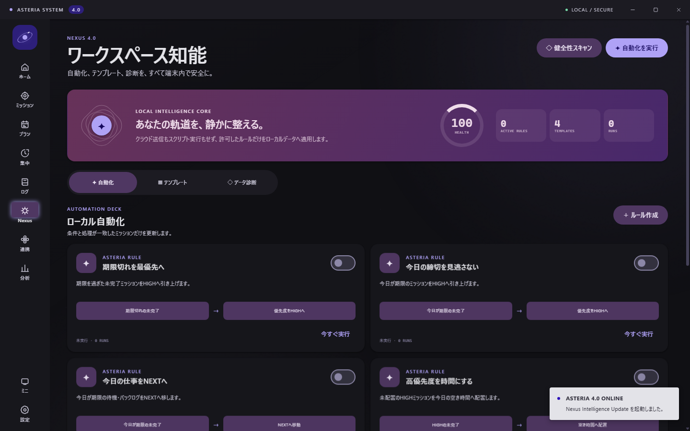
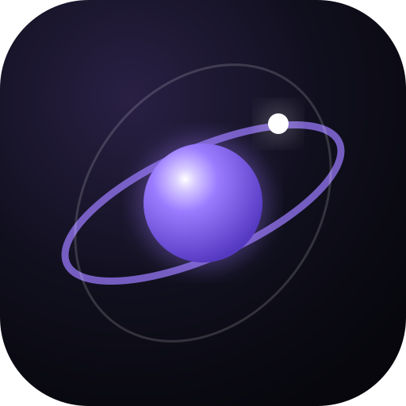
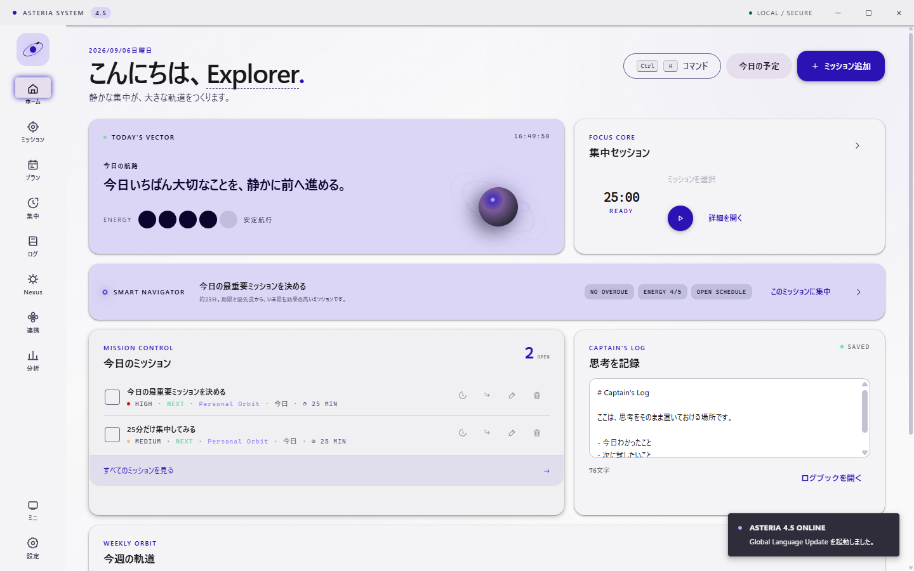
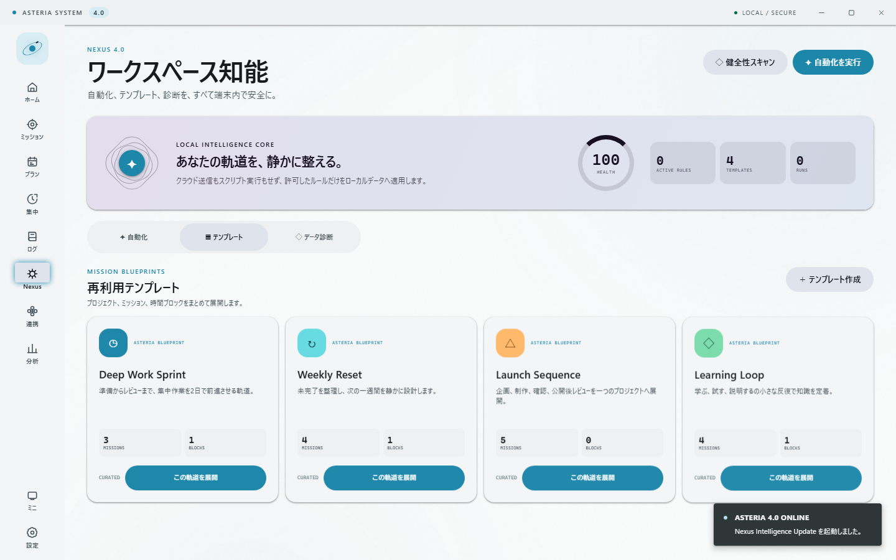
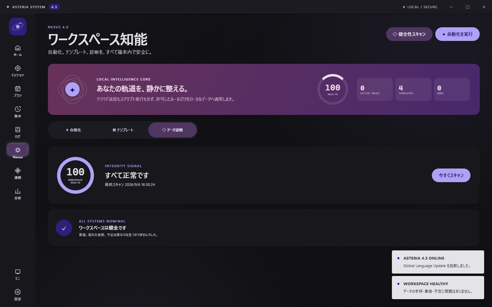
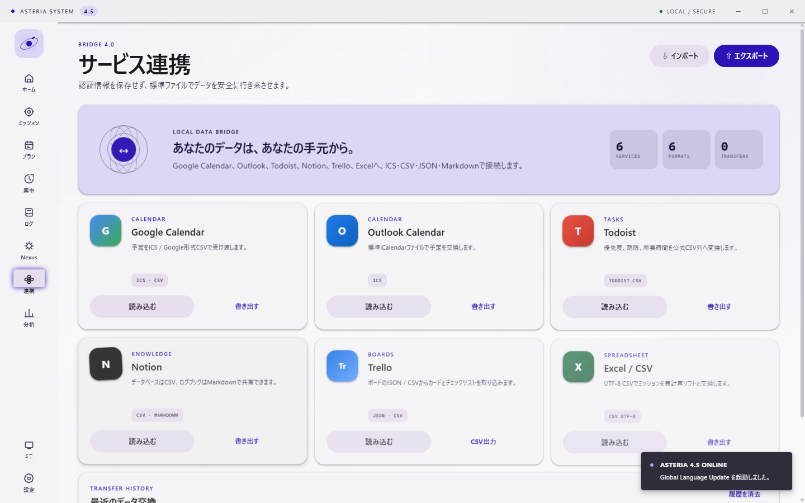

01
AUTOMATION DECK
条件も、処理も、見える自動化。
期限切れの優先度調整、今日の空き時間への配置、完了ログの記録。安全な処理だけを選び、有効化前に内容を確認できます。
- 初期状態はすべて停止
- 重複を避ける冪等処理
- 実行履歴とUndo


ASTERIA 4.0NEXUS INTELLIGENCE UPDATE
予定、ミッション、集中、習慣、記録。ASTERIAは、散らばった毎日を 一つの美しいワークスペースへまとめるWindowsアプリです。

LOCAL INTELLIGENCE / NEXUS 4.0
NEXUSは、何が起きるかを常に見せるローカル知能層です。ルール、展開、修復は 端末内で完結し、結果は監査でき、直後なら元に戻せます。
AUTOMATION DECK
期限切れの優先度調整、今日の空き時間への配置、完了ログの記録。安全な処理だけを選び、有効化前に内容を確認できます。

MISSION BLUEPRINTS
プロジェクト、ミッション、予定を一括生成。4つの収録テンプレートに加え、自分の成功パターンを保存できます。

DATA HEALTH
重複、参照切れ、予定衝突、長期停滞をスキャン。修復は対象を限定し、元のデータをできるだけ残します。

ONE QUIET WORKSPACE
プロジェクト、期限、優先度、サブタスク、繰り返し。リストとボードを自由に切り替えます。
日・週・月の予定を一つの流れで。ORBIT ASSISTが重要な仕事を空き時間へ配置します。
25、50、90分とカスタムタイマー。集中状態は再起動後も復元され、環境音は端末内で生成します。
思考をMarkdownで残し、習慣と実績を分析。記録が次の行動を選ぶ材料になります。
BRIDGE / FILE EXCHANGE
Google Calendar、Outlook、Todoist、Notion、Trello、Excelへ。JSON、CSV、ICS、Markdownを使い、認証情報なしで安全に受け渡せます。
SPECTRUM / MATERIAL DESIGN 3
任意色から完全なセマンティックパレットを生成。ライト、ダーク、システム連動と、3段階のモーションを選べます。
UNIVERSAL COMMAND
ミッション、プロジェクト、予定、習慣、ログ、自動化、テンプレートを横断。探す時間を、進む時間へ戻します。

LOCAL / SECURE
アカウントも、テレメトリも、クラウド認証情報も不要。ASTERIA 4.0は、個人データを外部へ自動送信しません。
プライバシー設計を読む →READY FOR YOUR ORBIT
Windows x64 · ポータブル · インストール不要
! 現在のEXEはAuthenticode未署名です。初回起動時にSmartScreenが表示される場合があります。